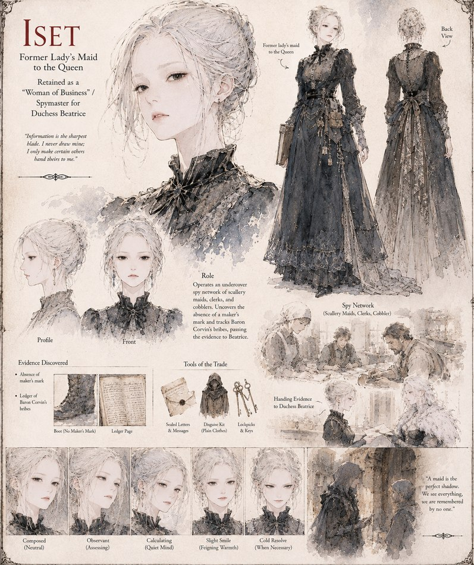

Iset
Former Lady's Maid to the Queen · retained by Beatrice as a “Woman of Business”
Once lady's maid to the Queen, now retained by Duchess Beatrice in the more useful role of spymaster in all but title. She runs an undercover network of scullery maids, clerks, and a cobbler through Ironhold and Solis alike, and it's her people who notice a boot missing its maker's mark — a thread that, followed far enough through a ledger of quiet payments, leads straight to Baron Corvin's bribes.
“Information is the sharpest blade. I never draw mine; I only make certain others hand theirs to me.”